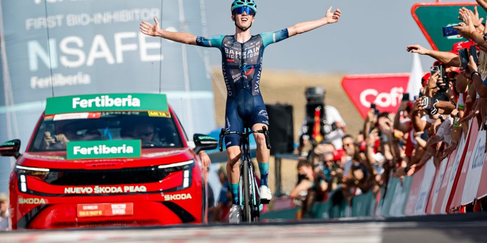
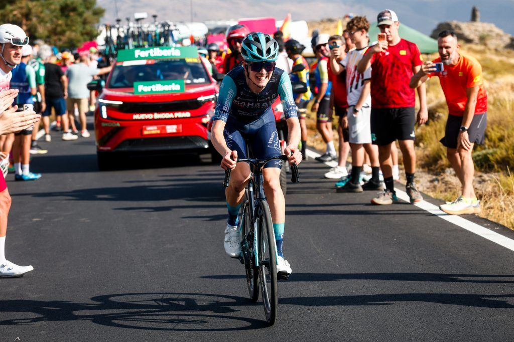
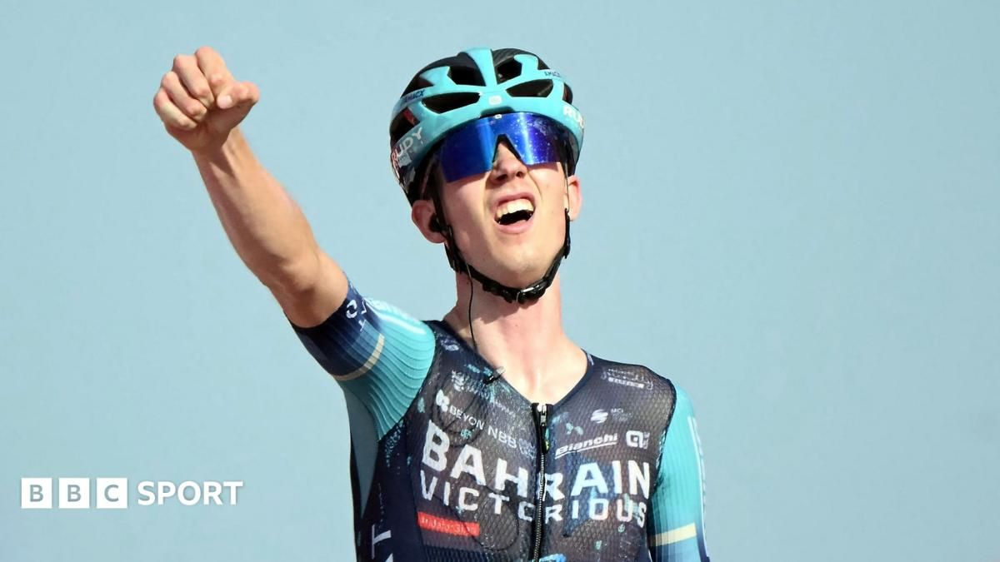

Twenty years old. First Grand Tour. First stage.
4 Sep 2026
Stage 12, Thu 3 Sep: Vera → Calar Alto, 166.5 km. Omrzel 4:29:53 solo. Berrade +1:56. Buitrago +2:13. Bahrain 1 and 3 on a summit day that finally asked GC questions.
Friday 4 Sep 2026
Stage 12, Thu 3 Sep: Vera → Calar Alto, 166.5 km, five categorised climbs, 17 km summit finish. Winner Jakob Omrzel (Bahrain Victorious) 4:29:53. 2. Urko Berrade +1:56. 3. Santiago Buitrago +2:13. 4. Alexey Lutsenko +2:49. 5. Mauri Vansevenant +2:53.
Red Mas 40:31:51. Roglič +1:45. Gall +2:06. Carapaz +3:53. Onley +4:29 (white). Omrzel +4:59 (sixth, +0:30 white). Green van Aert 194. Polka Buitrago 52. Team Decathlon CMA CGM. Crash: Onley early, then dropped on the final climb. Tomorrow Stage 13, Fri 4 Sep: Almuñécar → Loja, 193.2 km, medium-mountain.
Mountains back on the menu and Bahrain wrote both plots. Big break, Bilbao managing, Buitrago vacuuming KOM points, then 20-year-old Omrzel went alone with about 13 km left on Calar Alto and never looked back — first GT stage, first GT start, nearly two minutes clear of Berrade.
Behind the escape, Mas punched with ~13 km to go and Roglič, Gall, and Carapaz could not answer. Twenty-seven seconds banked in the heat. Onley’s early crash plus the climb cost him fourth on GC and left white on a 30-second leash. Red finally raced. Week three still has Sierra Nevada to spend it.

4 Sep 2026
Stage 12, Thu 3 Sep: Vera → Calar Alto, 166.5 km. Omrzel 4:29:53 solo. Berrade +1:56. Buitrago +2:13. Bahrain 1 and 3 on a summit day that finally asked GC questions.

4 Sep 2026
Attack with ~13 km left. Roglič, Gall, Carapaz stuck. Twenty-seven seconds into the bank. Red now +1:45 on Roglič, +2:06 on Gall. Onley’s crash made fourth a Carapaz problem.

4 Sep 2026
Onley still in white at +4:29 overall. Omrzel sixth at +4:59 after gaining over five minutes on the Briton at the line. Polka stays Buitrago (52). Green van Aert (194). Today: Almuñécar → Loja, 193.2 km.